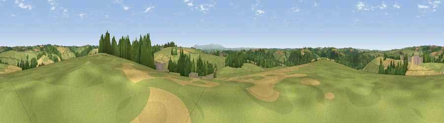

Viewpoint near Beaford
#20908 in England · top 37% of its area beats it · near BeafordWhere it is
The exact computed spot (SS 54275 16025). Click the marker for map links.
The view, rendered

A 360° render of this exact spot computed from the terrain model, tree cover and land cover — summer colours, afternoon light, calibrated against photographs of famous viewpoints. Real trees, hedges and buildings will differ in detail.
The panorama
Grey silhouette: terrain skyline in each direction (720 bearings, Earth curvature and refraction included). Dashed green: skyline with trees (+15 m) and buildings (+8 m) as obstacles. Blue strip: how far the ground is visible on each bearing.
Where the view opens
Wedge length = distance to the farthest visible ground on that bearing (vegetation-aware). Rings at 10, 25 and 50 km.
What fills the view
63% grassland · 21% cropland · 16% woodland ·
Angular shares of the visible panorama (visual magnitude), not map area. Landscape diversity 0.41 (0–1 Shannon).
Key numbers
More beautiful places nearby
The staircase of upgrades: each row has a higher view potential than everything closer. Driving times are estimates from straight-line distance, calibrated against real road routing — check an actual route before setting out.
| Place | Direction | Drive | Score |
|---|---|---|---|
| Viewpoint near Kingscott | NNW · 2 km | ~6 min | 53.5 |
| Viewpoint near Little Torrington | WSW · 3 km | ~8 min | 59.1 |
| Viewpoint near Little Torrington | WSW · 4 km | ~9 min | 59.7 |
| Viewpoint near Little Torrington | W · 5 km | ~10 min | 62.8 |
| Viewpoint near High Bullen | NNW · 6 km | ~12 min | 71.2 |
| Viewpoint near Alverdiscott | NNW · 11 km | ~20 min | 71.7 |
| Viewpoint near Bideford | NW · 11 km | ~21 min | 73.5 |
| Viewpoint near Bishop's Tawton | NNE · 14 km | ~25 min | 73.8 |
50.92522, -4.07483 · source: screening · position refined by local search. Computed location — check access rights before visiting.